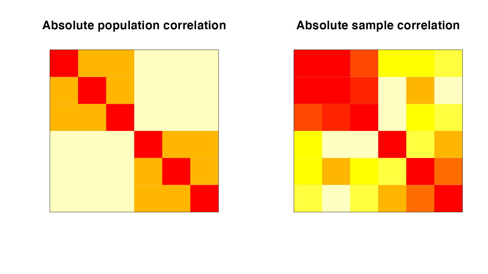

Why is independencepvalue needed?
In theory, one should decide on the hypotheses to test before seeing the data. However, in practice, scientists often want to find something seemingly interesting in the data and then use it to test if it is really interesting. When we generate a hypothesis based on a data set and then use the same data set to test the hypothesis, classical hypothesis testing may lead to invalid results.
To illustrate: we consider a simulated dataset, where the variables are correlated (as shown in the heatmap of the absolute entries of the absolute and sample correlation matrix). In this dataset, we first identify groups of seemingly uncorrelated variables via thresholding the correlation matrix. We want to test the null hypothesis that they are really uncorrelated. A classical approach based on Wilks’ lambda distribution yielded a p-value of 0.791, even when the variables are correlated in the population! This shows how ignoring the fact that the hypothesis was selected from the data can lead to a tremendous loss of power.

This is where independencepvalue comes into play. It accounts for the fact that the hypothesis was generated by thresholding the correlation matrix of the data. Applying independencepvalue in the aforementioned scenario leads to a p-value of 0.014. Unlike classical inference, this test correctly identifies the group of variables to be correlated. To know more about how to use independencepvalue, please see the Tutorial.
How does independencepvalue work?
independencepvalue works in two stages:
- First, we threshold the absolute values of the observed correlation matrix to partition the variables into groups of seemingly uncorrelated variables.
- Next, we take a selective inference approach to test if a group of variables (obtained in the previous step) is independent of the remaining variables. Here, unlike the classical approach, we do not ignore that the hypothesis was generated from the data. We account for this by conditioning on the event that the grouping of the variables that generated the hypothesis is recovered. We adjust the null distribution to account for the selection of the particular hypothesis being tested. By restricting attention to specifically those datasets that would have led to this hypothesis being selected, we are able to account for the selection effect.
For more details, please see our paper, Inferring independent sets of Gaussian variables after thresholding correlations.